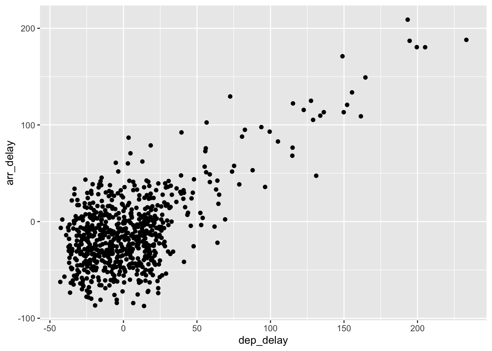

ModernDive Learning Checks - Completed
Karolyn Ismay
PhD Candidate, Pacific University
Summer 2019
Introduction
This page documents my completion of the Learning Checks and practice examples in the ModernDive textbook. In addition, this document itself shows my learning and skill development with R.
Below is a chunk of code that is needed to show some of the Learning Checks and the practice examples from the textbook on this document. You’ll see the package nycflights13 in red below which contains real flight data from New York City airports from 2013. This is the data I will manipulate in the Learning Checks and practice examples. The other packages are the tools that allow for some of that manipulation. For example, ggplot2 is a package that allows for plotting of data.
c(
"nycflights13",
"dplyr",
"knitr",
"ggplot2",
"rmarkdown",
"xaringan",
"tidyverse",
"bookdown",
"kableExtra",
"fivethirtyeight"
) -> package_vector
sapply(X = package_vector,
FUN = library,
character.only = TRUE)Chapter 1: Introduction to R and Rstudio
Much of this chapter is about learning basic syntax in R, such as identifying computer_code and understanding the Rstudio interface.
Learning Check 1.1
Repeat the above installing steps, but for the dplyr, nycflights13, and knitr packages. This will install the earlier mentioned dplyr package, the nycflights13 package containing data on all domestic flights leaving a NYC airport in 2013, and the knitr package for writing reports in R.
Answer:
install.packages(c("dplyr", "nycflights13", knitr"))Installing a package downloads the package onto your local computer.
Learning Check 1.2
“Load” the dplyr, nycflights13, and knitr packages as well by repeating the above steps.
Answer:
library("dplyr")
library("nycflights13")
library("knitr")Loading a package tells Rstudio to switch “on” that particular package.
Practice 1.4.2
Explore the flights data frame by calling up the flights tibble.
flights## # A tibble: 336,776 x 20
## year month day dep_time sched_dep_time dep_delay arr_time
## <int> <int> <int> <int> <int> <dbl> <int>
## 1 2013 1 1 517 515 2 830
## 2 2013 1 1 533 529 4 850
## 3 2013 1 1 542 540 2 923
## 4 2013 1 1 544 545 -1 1004
## 5 2013 1 1 554 600 -6 812
## 6 2013 1 1 554 558 -4 740
## 7 2013 1 1 555 600 -5 913
## 8 2013 1 1 557 600 -3 709
## 9 2013 1 1 557 600 -3 838
## 10 2013 1 1 558 600 -2 753
## # … with 336,766 more rows, and 13 more variables: sched_arr_time <int>,
## # arr_delay <dbl>, carrier <chr>, flight <int>, tailnum <chr>,
## # origin <chr>, dest <chr>, air_time <dbl>, distance <dbl>, hour <dbl>,
## # minute <dbl>, time_hour <dttm>, gain <dbl>Learning Check 1.3
Run View(flights) in your Console in RStudio…and explore this data frame in the resulting pop-up viewer. What does any ONE row in this flights dataset refer to?
* A. Data on an airline
* B. Data on a flight
* C. Data on an airport
* D. Data on multiple flights
Answer: B. Data on a flight
Rows correspond to individual observations or data on A flight. airline, and airport are variables and appear in columns not rows and “Data on multiple flights” would not appear on any ONE row.
Practice 1.4.3.2
Explore a data frame using the glimpse function.
glimpse(flights)## Observations: 336,776
## Variables: 20
## $ year <int> 2013, 2013, 2013, 2013, 2013, 2013, 2013, 2013, 2…
## $ month <int> 1, 1, 1, 1, 1, 1, 1, 1, 1, 1, 1, 1, 1, 1, 1, 1, 1…
## $ day <int> 1, 1, 1, 1, 1, 1, 1, 1, 1, 1, 1, 1, 1, 1, 1, 1, 1…
## $ dep_time <int> 517, 533, 542, 544, 554, 554, 555, 557, 557, 558,…
## $ sched_dep_time <int> 515, 529, 540, 545, 600, 558, 600, 600, 600, 600,…
## $ dep_delay <dbl> 2, 4, 2, -1, -6, -4, -5, -3, -3, -2, -2, -2, -2, …
## $ arr_time <int> 830, 850, 923, 1004, 812, 740, 913, 709, 838, 753…
## $ sched_arr_time <int> 819, 830, 850, 1022, 837, 728, 854, 723, 846, 745…
## $ arr_delay <dbl> 11, 20, 33, -18, -25, 12, 19, -14, -8, 8, -2, -3,…
## $ carrier <chr> "UA", "UA", "AA", "B6", "DL", "UA", "B6", "EV", "…
## $ flight <int> 1545, 1714, 1141, 725, 461, 1696, 507, 5708, 79, …
## $ tailnum <chr> "N14228", "N24211", "N619AA", "N804JB", "N668DN",…
## $ origin <chr> "EWR", "LGA", "JFK", "JFK", "LGA", "EWR", "EWR", …
## $ dest <chr> "IAH", "IAH", "MIA", "BQN", "ATL", "ORD", "FLL", …
## $ air_time <dbl> 227, 227, 160, 183, 116, 150, 158, 53, 140, 138, …
## $ distance <dbl> 1400, 1416, 1089, 1576, 762, 719, 1065, 229, 944,…
## $ hour <dbl> 5, 5, 5, 5, 6, 5, 6, 6, 6, 6, 6, 6, 6, 6, 6, 5, 6…
## $ minute <dbl> 15, 29, 40, 45, 0, 58, 0, 0, 0, 0, 0, 0, 0, 0, 0,…
## $ time_hour <dttm> 2013-01-01 05:00:00, 2013-01-01 05:00:00, 2013-0…
## $ gain <dbl> -9, -16, -31, 17, 19, -16, -24, 11, 5, -10, 0, 1,…Learning Check 1.4
What are some examples in this dataset of categorical variables? What makes them different than quantitative variables?
Answer: Categorical variables are labels, such as carrier, or dest. They are often chr or text data but can be numerical. However, 1 is not “more” or “less” than any other, it is a just a categorization.
Practice 1.4.3.3
Explore a data frame using the kable function. The kable function cleans up the data into a more legible format.
airlines## # A tibble: 16 x 2
## carrier name
## <chr> <chr>
## 1 9E Endeavor Air Inc.
## 2 AA American Airlines Inc.
## 3 AS Alaska Airlines Inc.
## 4 B6 JetBlue Airways
## 5 DL Delta Air Lines Inc.
## 6 EV ExpressJet Airlines Inc.
## 7 F9 Frontier Airlines Inc.
## 8 FL AirTran Airways Corporation
## 9 HA Hawaiian Airlines Inc.
## 10 MQ Envoy Air
## 11 OO SkyWest Airlines Inc.
## 12 UA United Air Lines Inc.
## 13 US US Airways Inc.
## 14 VX Virgin America
## 15 WN Southwest Airlines Co.
## 16 YV Mesa Airlines Inc.kable(airlines)| carrier | name |
|---|---|
| 9E | Endeavor Air Inc. |
| AA | American Airlines Inc. |
| AS | Alaska Airlines Inc. |
| B6 | JetBlue Airways |
| DL | Delta Air Lines Inc. |
| EV | ExpressJet Airlines Inc. |
| F9 | Frontier Airlines Inc. |
| FL | AirTran Airways Corporation |
| HA | Hawaiian Airlines Inc. |
| MQ | Envoy Air |
| OO | SkyWest Airlines Inc. |
| UA | United Air Lines Inc. |
| US | US Airways Inc. |
| VX | Virgin America |
| WN | Southwest Airlines Co. |
| YV | Mesa Airlines Inc. |
Practice 1.4.3.4
Explore a variable using the $ operator.
airlines## # A tibble: 16 x 2
## carrier name
## <chr> <chr>
## 1 9E Endeavor Air Inc.
## 2 AA American Airlines Inc.
## 3 AS Alaska Airlines Inc.
## 4 B6 JetBlue Airways
## 5 DL Delta Air Lines Inc.
## 6 EV ExpressJet Airlines Inc.
## 7 F9 Frontier Airlines Inc.
## 8 FL AirTran Airways Corporation
## 9 HA Hawaiian Airlines Inc.
## 10 MQ Envoy Air
## 11 OO SkyWest Airlines Inc.
## 12 UA United Air Lines Inc.
## 13 US US Airways Inc.
## 14 VX Virgin America
## 15 WN Southwest Airlines Co.
## 16 YV Mesa Airlines Inc.airlines$name## [1] "Endeavor Air Inc." "American Airlines Inc."
## [3] "Alaska Airlines Inc." "JetBlue Airways"
## [5] "Delta Air Lines Inc." "ExpressJet Airlines Inc."
## [7] "Frontier Airlines Inc." "AirTran Airways Corporation"
## [9] "Hawaiian Airlines Inc." "Envoy Air"
## [11] "SkyWest Airlines Inc." "United Air Lines Inc."
## [13] "US Airways Inc." "Virgin America"
## [15] "Southwest Airlines Co." "Mesa Airlines Inc."Learning Check 1.5
What properties of the observational unit do each of lat, lon, alt, tz, dst, and tzone describe for the airports data frame? Note that you may want to use ?airports to get more information.
Answer: ?airports launches the Help tab which shows that the variables are used to describe individual airports. lat and lon refer to the latitude and longitude. alt refers to the elevation. tz is the GMT while dst is daylight savings time zone and tzone is the IANA time zone.
Learning Check 1.6
Provide the names of variables in a data frame with at least three variables in which one of them is an identification variable and the other two are not. In other words, create your own tidy data frame that matches these conditions.
Answer: A possible data frame with three variables, one of which is an identification variable and the other two are not would be a data frame about homes. An identification variable could be the color of the house or the architectural style of the house. Two measurement variables could be the number of bathrooms and the square footage.
Chapter 2: Data Visualization
This chapter is about using multiple data visualization techniques on the nycflights13 package.
Practice 2.3
Utilizing a scatterplot, visualize the relationship between dep_delay on the x-axis and arr_delay on the y-axis for Alaska Airlines flights leaving NYC in 2013.
First, I’ll need to filter only the Alaska Airlines flights.
alaska_flights <- flights %>%
filter(carrier == "AS")Here I have created a new data frame named alaska_flights and asked R to populate the data frame based off of the data frame flights filtering for only those flights that are from Alaska Airlines.
Learning Check 2.1
Take a look at both the flights and alaska_flights data frames by running View(flights) and View(alaska_flights). In what respect do these data frames differ? For example, think about the number of rows in each dataset.
glimpse(flights)## Observations: 336,776
## Variables: 20
## $ year <int> 2013, 2013, 2013, 2013, 2013, 2013, 2013, 2013, 2…
## $ month <int> 1, 1, 1, 1, 1, 1, 1, 1, 1, 1, 1, 1, 1, 1, 1, 1, 1…
## $ day <int> 1, 1, 1, 1, 1, 1, 1, 1, 1, 1, 1, 1, 1, 1, 1, 1, 1…
## $ dep_time <int> 517, 533, 542, 544, 554, 554, 555, 557, 557, 558,…
## $ sched_dep_time <int> 515, 529, 540, 545, 600, 558, 600, 600, 600, 600,…
## $ dep_delay <dbl> 2, 4, 2, -1, -6, -4, -5, -3, -3, -2, -2, -2, -2, …
## $ arr_time <int> 830, 850, 923, 1004, 812, 740, 913, 709, 838, 753…
## $ sched_arr_time <int> 819, 830, 850, 1022, 837, 728, 854, 723, 846, 745…
## $ arr_delay <dbl> 11, 20, 33, -18, -25, 12, 19, -14, -8, 8, -2, -3,…
## $ carrier <chr> "UA", "UA", "AA", "B6", "DL", "UA", "B6", "EV", "…
## $ flight <int> 1545, 1714, 1141, 725, 461, 1696, 507, 5708, 79, …
## $ tailnum <chr> "N14228", "N24211", "N619AA", "N804JB", "N668DN",…
## $ origin <chr> "EWR", "LGA", "JFK", "JFK", "LGA", "EWR", "EWR", …
## $ dest <chr> "IAH", "IAH", "MIA", "BQN", "ATL", "ORD", "FLL", …
## $ air_time <dbl> 227, 227, 160, 183, 116, 150, 158, 53, 140, 138, …
## $ distance <dbl> 1400, 1416, 1089, 1576, 762, 719, 1065, 229, 944,…
## $ hour <dbl> 5, 5, 5, 5, 6, 5, 6, 6, 6, 6, 6, 6, 6, 6, 6, 5, 6…
## $ minute <dbl> 15, 29, 40, 45, 0, 58, 0, 0, 0, 0, 0, 0, 0, 0, 0,…
## $ time_hour <dttm> 2013-01-01 05:00:00, 2013-01-01 05:00:00, 2013-0…
## $ gain <dbl> -9, -16, -31, 17, 19, -16, -24, 11, 5, -10, 0, 1,…glimpse(alaska_flights)## Observations: 714
## Variables: 20
## $ year <int> 2013, 2013, 2013, 2013, 2013, 2013, 2013, 2013, 2…
## $ month <int> 1, 1, 1, 1, 1, 1, 1, 1, 1, 1, 1, 1, 1, 1, 1, 1, 1…
## $ day <int> 1, 1, 2, 2, 3, 3, 4, 4, 5, 5, 6, 6, 7, 7, 8, 8, 9…
## $ dep_time <int> 724, 1808, 722, 1818, 724, 1817, 725, 1808, 725, …
## $ sched_dep_time <int> 725, 1815, 725, 1815, 725, 1815, 725, 1815, 725, …
## $ dep_delay <dbl> -1, -7, -3, 3, -1, 2, 0, -7, 0, -12, -3, 2, 2, 11…
## $ arr_time <int> 1020, 2111, 949, 2131, 1012, 2121, 1031, 2101, 10…
## $ sched_arr_time <int> 1030, 2130, 1030, 2130, 1030, 2130, 1030, 2130, 1…
## $ arr_delay <dbl> -10, -19, -41, 1, -18, -9, 1, -29, -19, -12, -6, …
## $ carrier <chr> "AS", "AS", "AS", "AS", "AS", "AS", "AS", "AS", "…
## $ flight <int> 11, 7, 11, 7, 11, 7, 11, 7, 11, 7, 11, 7, 11, 7, …
## $ tailnum <chr> "N594AS", "N553AS", "N592AS", "N552AS", "N533AS",…
## $ origin <chr> "EWR", "EWR", "EWR", "EWR", "EWR", "EWR", "EWR", …
## $ dest <chr> "SEA", "SEA", "SEA", "SEA", "SEA", "SEA", "SEA", …
## $ air_time <dbl> 338, 336, 314, 332, 325, 327, 345, 338, 330, 343,…
## $ distance <dbl> 2402, 2402, 2402, 2402, 2402, 2402, 2402, 2402, 2…
## $ hour <dbl> 7, 18, 7, 18, 7, 18, 7, 18, 7, 18, 7, 18, 7, 18, …
## $ minute <dbl> 25, 15, 25, 15, 25, 15, 25, 15, 25, 15, 25, 15, 2…
## $ time_hour <dttm> 2013-01-01 07:00:00, 2013-01-01 18:00:00, 2013-0…
## $ gain <dbl> 9, 12, 38, 2, 17, 11, -1, 22, 19, 0, 3, -14, -28,…Answer: The flights data frame has all the flights departing NYC airports in 2013, over 336,776 rows. The alaska_flights data frame has only those flights departing NYC airports in 2013 that were operated by Alaska Airlines, just 714 rows.
Practice 2.3.1 Scatterplots
Utilizing the alaska_flights data frame I created above, now I will use the ggplot2 package to create a scatterplot with the ggplot function.
ggplot(data = alaska_flights,
mapping = aes(x = dep_delay,
y = arr_delay)) +
geom_point()## Warning: Removed 5 rows containing missing values (geom_point).
Above is a scatterplot of alaska_flights where dep_delay is on the x-axis and arr_delay is on the y-axis and each observation is represented by a point on the plot. Additionally, we see that 5 rows were removed from the 714 because they are missing values.
Learning Check 2.2
What are some practical reasons why dep_delay and arr_delay have a positive relationship?
Answer: One reason could be that leaving an hour later can mean arriving an hour later. On the other hand, sometimes flights make up time or arrive earlier than expected due to tailwind. The opposite can also be true if there are headwinds.
Learning Check 2.3
What variables in the weather data frame would you expect to have a negative correlation (i.e. a negative relationship) with dep_delay? Why? Remember that we are focusing on numerical variables here. Hint: Explore the weather dataset by using the View() function.
Answer: Looking at the View(weather) we see there are several variables that could impact dep_delay such as wind_gust and visib.
Learning Check 2.4
Why do you believe there is a cluster of points near (0, 0)? What does (0, 0) correspond to in terms of the Alaskan flights?
Answer: This is likely because flights which were not delayed upon departure arrived without delays as well. (0, 0) represents flights that departed on time and arrived on time.
Learning Check 2.5
What are some other features of the plot that stand out to you?
Answer: The scatterplot shows a fairly perfect correlation where the dots could be represented by a straight line with a slope of 1. Also it shows flights that departed early and arrived early and thus had negative dep_delay and arr_delay.
Learning Check 2.6
Create a new scatterplot using different variables in the alaska_flights data frame by modifying the example above.
Answer:
ggplot(
data = alaska_flights,
mapping = aes(
x = sched_dep_time,
y = dep_delay)) +
geom_point()## Warning: Removed 2 rows containing missing values (geom_point).This plot shows that more flights scheduled later in the day were delayed compared to much fewer flights delayed that were originally scheduled early in the day. We also see an example of how important it is to understand our data because we see that Alaska Airlines only flew out of NYC in the early morning and the evening as opposed to several times throughout the day. Also, we see that 2 rows were removed for missing values.
Practice 2.3.2 Dealing with overplotting
In Practice 2.3.1, we saw a plot that had many points near (0, 0) which made it difficult to tell just how many data points were in the overlapping areas. This is called overplotting and it can be mitigated.
Method 1: Adjusting the transparency of the geometric points:
ggplot(
data = alaska_flights,
mapping = aes(
x = dep_delay,
y = arr_delay)) +
geom_point(alpha = .2) This scatterplot’s points are set to 20% opacity with the geom_point(alpha = .2). This allows us to more clearly see the density of the points near (0, 0).
Method 2: Jittering the points. This introduces some random movement of the points. This should only be used for visualization and the original data should not be altered.
ggplot(data = alaska_flights,
mapping = aes(
x = dep_delay,
y = arr_delay)) +
geom_jitter(
width = 30,
height = 30)
This plot is similar to the original scatterplot but we can more clearly see how dense the (0, 0) area is.
Learning Check 2.7
Why is setting the alpha argument value useful with scatterplots? What further information does it give you that a regular scatterplot cannot?
Answer: alpha was used to change the opacity of the geom_point dots. This let us see that there was a high density of data in the (0, 0) area.
Learning Check 2.8
After viewing the Figure 2.4, give an approximate range of arrival delays and departure delays that occur the most frequently. How has that region changed compared to when you observed the same plot without the alpha = 0.2 set in Figure 2.2?
Answer: Figure 2.2 was the scatterplot without changes to the geom_point opacity whereas Figure 2.4 had opacity set to 20%. We see that most flights depart early or within a few minutes of on-time and most of those flights arrive early or within a few mintes of on-time.
Practice 2.4: Linegraphs
Using the nycflights13 package, recall the weather data frame. Pull a list the variables in the weather data frame.
names(weather)## [1] "origin" "year" "month" "day" "hour"
## [6] "temp" "dewp" "humid" "wind_dir" "wind_speed"
## [11] "wind_gust" "precip" "pressure" "visib" "time_hour"
## [16] "temp_in_C"Here I have listed all the variables in the data frame weather.
Create a sub data frame to look at the temp or temperature of flights with origin Newark (EWR) during the first half of January.
early_january_weather <- weather %>%
filter(
origin == "EWR" &
month == 1 &
day <= 15)
early_january_weather## # A tibble: 358 x 16
## origin year month day hour temp dewp humid wind_dir wind_speed
## <chr> <dbl> <dbl> <int> <int> <dbl> <dbl> <dbl> <dbl> <dbl>
## 1 EWR 2013 1 1 1 39.0 26.1 59.4 270 10.4
## 2 EWR 2013 1 1 2 39.0 27.0 61.6 250 8.06
## 3 EWR 2013 1 1 3 39.0 28.0 64.4 240 11.5
## 4 EWR 2013 1 1 4 39.9 28.0 62.2 250 12.7
## 5 EWR 2013 1 1 5 39.0 28.0 64.4 260 12.7
## 6 EWR 2013 1 1 6 37.9 28.0 67.2 240 11.5
## 7 EWR 2013 1 1 7 39.0 28.0 64.4 240 15.0
## 8 EWR 2013 1 1 8 39.9 28.0 62.2 250 10.4
## 9 EWR 2013 1 1 9 39.9 28.0 62.2 260 15.0
## 10 EWR 2013 1 1 10 41 28.0 59.6 260 13.8
## # … with 348 more rows, and 6 more variables: wind_gust <dbl>,
## # precip <dbl>, pressure <dbl>, visib <dbl>, time_hour <dttm>,
## # temp_in_C <dbl>Here I’ve created a data frame that is a subset of the original weather dataframe. I did this by creating a new object named early_january_weather and used a filter() to feed in data from weather that matches origin == "EWR" or Newark, during the month == 1 or January, where day <= 15 or days 1 through 15 on the calendar.
Learning Check 2.9
Take a look at both the weather and early_january_weather data frames by running View(weather) and View(early_january_weather). In what respect do these data frames differ?
Answer: early_january_weather is a subset of weather and thus has fewer observations.
Learning Check 2.10
View() the flights data frame again. Why does the time_hour variable uniquely identify the hour of the measurement whereas the hour variable does not?
Answer:
Practice 2.4.1: Linegraphs via geom_line
Plot a linegraph of hourly temperatures in early_january_weather by using geom_line() instead of geom_point() like we did for scatterplots.
ggplot(data = early_january_weather,
mapping = aes(x = time_hour,
y = temp)) +
geom_line()Learning Check 2.11
Why should linegraphs be avoided when there is not a clear ordering of the horizontal axis?
Answer: Because linegraphs don’t make sense without clear ordering. Each point needs to have meaning relative to the next.
Learning Check 2.12
Why are linegraphs frequently used when time is the explanatory variable on the x-axis?
Answer: Because linegraphs are well suited to linear data and we experience time linearly.
Learning Check 2.13
Plot a time series of a variable other than temp for Newark Airport in the first 15 days of January 2013.
Answer:
ggplot(data = early_january_weather,
mapping = aes(x = time_hour,
y = humid)) +
geom_line()
Here I’ve created a new linegraph showing the hourly humidity, or humid, for Newark Airport in the first 15 days of January 2013.
Practice 2.5: Histograms
Histograms are useful for showing distributions. The basic geom_histogram is the following:
ggplot(data = weather,
mapping = aes(x = temp)) +
geom_histogram()## `stat_bin()` using `bins = 30`. Pick better value with `binwidth`.## Warning: Removed 1 rows containing non-finite values (stat_bin).Here we see a suggestion to “Pick better value with binwidth” but that R has supplied a bins = 30 as the default. We also see a warning that one row was removed.
Add a white border to the bins to more clearly see each individual bin and change the fill to color of choice:
ggplot(data = weather,
mapping = aes(x = temp)) +
geom_histogram(color = "white", fill = "firebrick1")
Adjust the number of bins to 40:
ggplot(data = weather,
mapping = aes(x = temp)) +
geom_histogram(color = "white", fill = "firebrick1", bins = 40)Remove the bin number and adjust the binwidth to 10°F:
ggplot(data = weather,
mapping = aes(x = temp)) +
geom_histogram(color = "white", fill = "firebrick1", binwidth = 10)Learning Check 2.14
What does changing the number of bins from 30 to 40 tell us about the distribution of temperatures?
Answer: There isn’t much that is different, the distribution is fairly similar. The bins here are from 10.94°F to 100.04°F, so having a similar distribution between 30 and 40 bins tells us that temp values are accurate to a high degree. Looking at View(weather) we see that temp is accurate to the second decimal point.
ggplot(data = weather,
mapping = aes(x = temp)) +
geom_histogram(color = "white", fill = "firebrick1", bins = 30)ggplot(data = weather,
mapping = aes(x = temp)) +
geom_histogram(color = "white", fill = "firebrick1", bins = 40)
Learning Check 2.15
Would you classify the distribution of temperatures as symmetric or skewed?
Answer: It looks pretty symmetric.
Learning Check 2.16
What would you guess is the “center” value in this distribution? Why did you make that choice?
Answer: Visually, we see that the temperatures are symmetrically destributed and the range is from about 10-100°, so the “center” value is likely about 55°. When we run summary() on weather and look at temp we see that the median is 55.40° and the mean is 55.26.
summary(weather$temp)## Min. 1st Qu. Median Mean 3rd Qu. Max. NA's
## 10.94 39.92 55.40 55.26 69.98 100.04 1Learning Check 2.17
Is the data spread out greatly from the center or is it close? Why?
Answer: That depends on what “greatly” means. Compared to other years? Compared to another city? When compared to Kailua, Hawaii, a place with averages from 69-85°, then yes, the weather in NYC was more spread out.
Practice 2.6: Facets
Facets can break off variable by another variable for visualizations. facet_wrap is a visualization modifier ggplot2 that will create multiple plots where the x and y axes match but each plot will look different according to the modifying variable. For example, we can look at weather by temp by month.
ggplot(data = weather,
mapping = aes(x = temp)) +
geom_histogram(binwidth = 5, color = "white") +
facet_wrap(~ month)Above we see temps by month. We can further modify the output by asking for the plot to have 4 rows.
ggplot(data = weather,
mapping = aes(x = temp)) +
geom_histogram(binwidth = 5, color = "white") +
facet_wrap(~ month, nrow = 4)Now we see a basic histogram of temps in a 4x3 arrangement, useful if you’re the type that thinks in quarters.
Learning Check 2.18
What other things do you notice about the faceted plot above? How does a faceted plot help us see relationships between two variables?
Answer: The faceted plot shows that while the original histogram was symmetrically distributed, the temperatures vary from month to month. No month sees both near 0° and near 100° weather.
Learning Check 2.19
What do the numbers 1-12 correspond to in the plot above? What about 25, 50, 75, 100?
Answer: The numbers 1-12 correspond to months and 25, 50, 75, 100 correspond to temperature.
Learning Check 2.20
For which types of data sets would these types of faceted plots not work well in comparing relationships between variables? Give an example describing the nature of these variables and other important characteristics.
Answer: Facets plot a variable broken up by another variable. For temperature, we broke it down by month. nycflights13 only has temperature data for the year 2013, so if we tried to plot the temperature by year, we’d have only one facet. We would need data from multiple years. Conversely, it would be a little ridiculous facet_wrap by day because we would end up with 365 plots.
Learning Check 2.21
Does the temp variable in the weather data set have a lot of variability? Why do you say that?
Answer: That depends on what “a lot” means. For New York City, it seems pretty reasonable. For Kailua, Hawaii, it would be… a lot.
Practice 2.7: Boxplots
Boxplots require a categorical variable in the x-axis. They show the range of data in quartiles where the center bolded line is the median, the area above the median and within the box is the third quartile, the area below the median within the box is the second quartile, and the whiskers on either end represent the first and fourth quartiles. Of note, the whiskers do not include data points that are 1.5x greater or less than the interquartile range. Those values are considered outliers.
ggplot(data = weather,
mapping = aes(x = month, y = temp))+
geom_boxplot()The plot above is not very helpful because the months are numerical instead of categorical. Boxplots require categorical variables in the x-axis.
ggplot(data = weather,
mapping = aes(x = factor(month), y = temp)) +
geom_boxplot()
Here we a have box plot of the temperatures by month with dots identifying values considered outliers. Outliers in these boxplots are those values that are more than 1.5x greater than the interquartile range (IQR).
Learning Check 2.22
What does the dot at the bottom of the plot for May correspond to? Explain what might have occurred in May to produce this point.
Answer: The dot is an outlier value in the month of May. It is rather extreme, so let’s see if the same temperature was recorded at multiple airports or if perhaps there’s an error in the data.
weather %>%
filter(month==5 & temp < 25)## # A tibble: 1 x 16
## origin year month day hour temp dewp humid wind_dir wind_speed
## <chr> <dbl> <dbl> <int> <int> <dbl> <dbl> <dbl> <dbl> <dbl>
## 1 JFK 2013 5 8 22 13.1 12.0 95.3 80 8.06
## # … with 6 more variables: wind_gust <dbl>, precip <dbl>, pressure <dbl>,
## # visib <dbl>, time_hour <dttm>, temp_in_C <dbl>Here we see only one airport on one day at 10pm registered a very low temperature. This looks like a data entry error. Just to double check, let’s look at the temperatures leading up to May 8 at 10pm.
weather %>%
filter(month==5 & day==8 & hour >18) %>%
arrange(hour)## # A tibble: 15 x 16
## origin year month day hour temp dewp humid wind_dir wind_speed
## <chr> <dbl> <dbl> <int> <int> <dbl> <dbl> <dbl> <dbl> <dbl>
## 1 EWR 2013 5 8 19 60.1 52.0 74.6 NA 3.45
## 2 JFK 2013 5 8 19 57.9 52.0 80.6 120 10.4
## 3 LGA 2013 5 8 19 61.0 51.1 69.9 150 8.06
## 4 EWR 2013 5 8 20 59 53.1 80.6 80 4.60
## 5 JFK 2013 5 8 20 57.0 51.1 80.5 150 8.06
## 6 LGA 2013 5 8 20 60.1 48.9 66.6 140 5.75
## 7 EWR 2013 5 8 21 59 53.1 80.6 80 4.60
## 8 JFK 2013 5 8 21 57.0 48.9 74.3 170 11.5
## 9 LGA 2013 5 8 21 59 48.9 69.2 NA 5.75
## 10 EWR 2013 5 8 22 59 52.0 77.5 90 3.45
## 11 JFK 2013 5 8 22 13.1 12.0 95.3 80 8.06
## 12 LGA 2013 5 8 22 59 51.1 75.0 100 6.90
## 13 EWR 2013 5 8 23 57.9 52.0 80.6 0 0
## 14 JFK 2013 5 8 23 57.2 53.6 87.7 120 4.60
## 15 LGA 2013 5 8 23 55.9 51.1 83.7 90 6.90
## # … with 6 more variables: wind_gust <dbl>, precip <dbl>, pressure <dbl>,
## # visib <dbl>, time_hour <dttm>, temp_in_C <dbl>Here we see that every row, asid is showing a temperature range of about 50-61°. Row 11 definitely looks like an error.
Learning Check 2.23
Which months have the highest variability in temperature? What reasons can you give for this?
Answer: It looks like November had the most variability but december and January are close. Below is a plot of the IQRs:
weather %>%
group_by(month) %>%
summarize(IQR = IQR(temp, na.rm=TRUE)) %>%
arrange(desc(IQR))## # A tibble: 12 x 2
## month IQR
## <dbl> <dbl>
## 1 11 16.0
## 2 12 14.0
## 3 1 13.8
## 4 9 12.1
## 5 4 12.1
## 6 5 11.9
## 7 6 11.0
## 8 10 11.0
## 9 2 10.1
## 10 7 9.18
## 11 3 9
## 12 8 7.02It looks like November, December, January, and September were the most variable.
Learning Check 2.24
We looked at the distribution of the numerical variable temp split by the numerical variable month that we converted to a categorical variable using the factor() function. Why would a boxplot of temp split by the numerical variable pressure similarly converted to a categorical variable using the factor() not be informative?
Answer: Because there are only 12 months whereas there are significantly more values for pressure.
Learning Check 2.25
Boxplots provide a simple way to identify outliers. Why may outliers be easier to identify when looking at a boxplot instead of a faceted histogram?
Answer: Because histograms have bins to group values together whereas boxplots clearly labeled outliers.
Practice 2.8: Barplots
Barplots are useful for categorical variables while histograms and boxplots are for numerical variables. For example, let’s create another data frame.
dogs <- tibble(
dog = c("corgi", "corgi", "lab", "corgi", "lab"))
dogs_counted <- tibble(
dog = c("corgi", "lab"),
number = c(3, 2)
)
dogs## # A tibble: 5 x 1
## dog
## <chr>
## 1 corgi
## 2 corgi
## 3 lab
## 4 corgi
## 5 labdogs_counted## # A tibble: 2 x 2
## dog number
## <chr> <dbl>
## 1 corgi 3
## 2 lab 2Above there are two tibbles, one that lists dogs and the other that shows the counted values. Depending on how data are saved, there are two different ways of creating a barplot.
To create a barplot without a counted variable:
ggplot(data = dogs,
mapping = aes (x = dog)) +
geom_bar()To create a barplot with a counted variable:
ggplot(data = dogs_counted,
mapping = aes(x = dog, y = number)) +
geom_col()Both plots look the same but the coding needed to create them is different because of how the data was entered (counted or not).
Now we can try with the nycflights13 data. Let’s create barplot with carrier. The data in the carrier column is not counted, that is to say there is a categorical entry for each row under carrier such as DL for Delta Airlines.
ggplot(data = flights,
mapping = aes(x = carrier)) +
geom_bar()
Here we can see that UA or United Airlines has the highest number of flights out of NYC.
Learning Check 2.26
Why are histograms inappropriate for visualizing categorical variables?
Answer: Because histograms are for numerical variables, not categorical variables.
Learning Check 2.27
What is the difference between histograms and barplots?
Answer: Barplots are for categorical variables while histograms are for numerical variables
Learning Check 2.28
How many Envoy Air flights departed NYC in 2013
Answer: Below we see that there are 26,397 Envoy Air flights departing NYC in 2013.
envoy_flights <- flights %>%
filter (carrier == "MQ")
glimpse(envoy_flights)## Observations: 26,397
## Variables: 20
## $ year <int> 2013, 2013, 2013, 2013, 2013, 2013, 2013, 2013, 2…
## $ month <int> 1, 1, 1, 1, 1, 1, 1, 1, 1, 1, 1, 1, 1, 1, 1, 1, 1…
## $ day <int> 1, 1, 1, 1, 1, 1, 1, 1, 1, 1, 1, 1, 1, 1, 1, 1, 1…
## $ dep_time <int> 600, 602, 608, 624, 656, 749, 800, 805, 811, 821,…
## $ sched_dep_time <int> 600, 605, 600, 630, 705, 710, 810, 815, 630, 825,…
## $ dep_delay <dbl> 0, -3, 8, -6, -9, 39, -10, -10, 101, -4, -5, -8, …
## $ arr_time <int> 837, 821, 807, 840, 1007, 939, 949, 1006, 1047, 9…
## $ sched_arr_time <int> 825, 805, 735, 830, 940, 850, 955, 1010, 830, 945…
## $ arr_delay <dbl> 12, 16, 32, 10, 27, 49, -6, -4, 137, -13, -13, -2…
## $ carrier <chr> "MQ", "MQ", "MQ", "MQ", "MQ", "MQ", "MQ", "MQ", "…
## $ flight <int> 4650, 4401, 3768, 4599, 4534, 3737, 4406, 4490, 4…
## $ tailnum <chr> "N542MQ", "N730MQ", "N9EAMQ", "N518MQ", "N722MQ",…
## $ origin <chr> "LGA", "LGA", "EWR", "LGA", "LGA", "EWR", "JFK", …
## $ dest <chr> "ATL", "DTW", "ORD", "MSP", "XNA", "ORD", "RDU", …
## $ air_time <dbl> 134, 105, 139, 166, 233, 148, 80, 101, 118, 52, 1…
## $ distance <dbl> 762, 502, 719, 1020, 1147, 719, 427, 479, 544, 21…
## $ hour <dbl> 6, 6, 6, 6, 7, 7, 8, 8, 6, 8, 8, 8, 8, 18, 9, 8, …
## $ minute <dbl> 0, 5, 0, 30, 5, 10, 10, 15, 30, 25, 35, 40, 50, 3…
## $ time_hour <dttm> 2013-01-01 06:00:00, 2013-01-01 06:00:00, 2013-0…
## $ gain <dbl> -12, -19, -24, -16, -36, -10, -4, -6, -36, 9, 8, …Learning Check 2.29
What was the seventh highest airline in terms of departed flights from NYC in 2013? How could we better present the table to get this answer quickly?
Answer: Looking at the barplot above, it appears that US Airways had the seventh most flights. Creating a new tibble to show airlines by count would be helpful.
Learning Check 2.30
Why should pie charts be avoided and replaced by barplots?
Answer: Because they are difficult to read, especially when there are more than 2 or three variables
Learning Check 2.31
Why do you think people continue to use pie charts?
Answer: Because they’ve never had to make an important decision based off one.
Practice 2.8.3: Stacked Barplots
Barplots can have more than one categorical variable. For example, let’s create a barplot for the number of flights by carrier and origin.
ggplot(data = flights,
mapping = aes(x = carrier, fill = origin)) +
geom_bar()This plot shows the count of flights by carrier and filled in with three different colors according to the origin of the flight. This is a stacked barplot. This isn’t the most ideal plot because it is difficult to compare the stacks based on origin unless there are significant differences. This plot suffers from a similar issue as a pie chart, though this is definitely an improvement.
Learning Check 2.32
What kinds of questions are not easily answered by looking at the above figure?
Answer: The stacked barplot isn’t useful for telling us exactly how many flights were with which carrier or which origin. If there were only two airports of origin, it might be a little easier to compare using this kind of plot.
Learning Check 2.33
What can you say, if anything, about the relationship between airline and airport in NYC in 2013 in regards to the number of departing flights?
Answer: We might be able to guess which airports are a hub for which airlines. For example, it is likely that Newark, EWR, is a hub for United Airlines, UA.
Practice 2.8.4: Dodged Barplots
Stacked barplots can also be broken down so that they are side-by-side, also called dodged barplots. For example:
ggplot(data = flights,
mapping = aes(x = carrier, fill = origin)) +
geom_bar(position = "dodge")This plot has all the bars starting at 0, making it easier for us to compare the number of flights by carrier and origin. Looking at Delta Airlines, DL, it looks like they use both JFK and LaGuardia as hubs.
Learning Check 2.34
Why might the side-by-side (AKA dodged) barplot be preferable to a stacked barplot in this case?
Answer: In this case, it is easier to compare differences in carrier and origin counts with a dodged barplot because some of the counts are very similar to one another and there are many carriers.
Learning Check 2.35
What are the disadvantages of using a side-by-side (AKA dodged) barplot, in general?
Answer: There’s a lot to look at in this type of plot with the data we’re using for it. We still can’t see the actual counts for each origin by carrier.
Practice 2.8.5: Faceted Barplots
Another variation on the barplot is a faceted barplot. Here we can split off the barplot into three different plots by origin.
ggplot(data = flights,
mapping = aes(x = carrier)) +
geom_bar() +
facet_wrap(~ origin, ncol = 1)Here I’ve removed the mapping of origin and added a facet_wrap with ~ origin. I’ve also included a ncol = 1 so that all three origins aren’t on one row. It could also be written nrow = 3 since I know how many origins there are.
Learning Check 2.35
Why is the faceted barplot preferred to the side-by-side and stacked barplots in this case?
Answer: Well, it depends on what question(s) you’re trying to answer, but here there is a bit more visual space between each carrier.
Learning Check 2.36
What information about the different carriers at different airports is more easily seen in the faceted barplot?
Answer: We can see which carriers prefer which airports. Again, Delta is pretty evenly split between JFK and LGA.
Chapter 3: Data Wrangling
This chapter is about taking existing data and learning to transform it via filter(), summarize(), group_by(), mutate(), arrange(), and join(). The pipe operator %>% allows for multiple functions to be used sequentially.
Practice 3.1: The pipe operator: %>%
The pipe operator %>% is a tool in the dplyr package. It allows for functions to be nested c(b(a(x))). Though it looks backwards, it would be like taking data frame x, using it in function a() which would be a(x), taking that output a(x) and using it in function b() which would be b(a(x)), and so on.
The %>% is used in nested code to make it easier to read. It would look like:
x %>%
a() %>%
b() %>%
c()Often times it is helpful to read %>% as “then”. This is similar to in ggplot() using the + symbol to add a chain of actions. With %>% we can chain two pieces of code together.
For example, if I wanted to create a new data frame named alaska_flights the code would be alaska_flights <- flights. This code is telling R to take the data frame flights and create a new data frame named alaska_flights. Next, I want to filter the data frame flights by carrier AS. This code would be filter(carrier == "AS"). Put all together, it would be:
alaska_flights <- flights %>%
filter(carrier == "AS")
as_tibble(alaska_flights)## # A tibble: 714 x 20
## year month day dep_time sched_dep_time dep_delay arr_time
## <int> <int> <int> <int> <int> <dbl> <int>
## 1 2013 1 1 724 725 -1 1020
## 2 2013 1 1 1808 1815 -7 2111
## 3 2013 1 2 722 725 -3 949
## 4 2013 1 2 1818 1815 3 2131
## 5 2013 1 3 724 725 -1 1012
## 6 2013 1 3 1817 1815 2 2121
## 7 2013 1 4 725 725 0 1031
## 8 2013 1 4 1808 1815 -7 2101
## 9 2013 1 5 725 725 0 1011
## 10 2013 1 5 1803 1815 -12 2118
## # … with 704 more rows, and 13 more variables: sched_arr_time <int>,
## # arr_delay <dbl>, carrier <chr>, flight <int>, tailnum <chr>,
## # origin <chr>, dest <chr>, air_time <dbl>, distance <dbl>, hour <dbl>,
## # minute <dbl>, time_hour <dttm>, gain <dbl>Practice 3.2: filter rows
The filter() function is pretty straightforward, it will select only the rows that fit your parameters. This means it is often best to start with filter() before moving on to other functions because it narrows down the number of observations for the functions that follow after it. One thing to note is the double == here. Other operations are:
>greater than<less than>=greater than or equal to<=less than or equal to!=not equal to
You can also add the following:
|or&and
For example, this is how to filter flights for all rows that departed from JFK, were headed to Burlington, Vermont or Seattle, Washington and departed in the months of October, November, or December:
btv_sea_flights_fall <- flights %>%
filter(origin == "JFK" &
(dest == "BTV" | dest == "SEA") &
month >= 10)
as_tibble(btv_sea_flights_fall)## # A tibble: 815 x 20
## year month day dep_time sched_dep_time dep_delay arr_time
## <int> <int> <int> <int> <int> <dbl> <int>
## 1 2013 10 1 729 735 -6 1049
## 2 2013 10 1 853 900 -7 1217
## 3 2013 10 1 916 925 -9 1016
## 4 2013 10 1 1216 1221 -5 1326
## 5 2013 10 1 1452 1459 -7 1602
## 6 2013 10 1 1459 1500 -1 1817
## 7 2013 10 1 1754 1800 -6 2102
## 8 2013 10 1 1825 1830 -5 2159
## 9 2013 10 1 1925 1930 -5 2227
## 10 2013 10 1 2238 2245 -7 2348
## # … with 805 more rows, and 13 more variables: sched_arr_time <int>,
## # arr_delay <dbl>, carrier <chr>, flight <int>, tailnum <chr>,
## # origin <chr>, dest <chr>, air_time <dbl>, distance <dbl>, hour <dbl>,
## # minute <dbl>, time_hour <dttm>, gain <dbl>Or we can look at flights that were not going to Burlington or Seattle with:
not_btv_sea <- flights %>%
filter(!(dest == "BTV" | dest == "SEA"))
as_tibble(not_btv_sea)## # A tibble: 330,264 x 20
## year month day dep_time sched_dep_time dep_delay arr_time
## <int> <int> <int> <int> <int> <dbl> <int>
## 1 2013 1 1 517 515 2 830
## 2 2013 1 1 533 529 4 850
## 3 2013 1 1 542 540 2 923
## 4 2013 1 1 544 545 -1 1004
## 5 2013 1 1 554 600 -6 812
## 6 2013 1 1 554 558 -4 740
## 7 2013 1 1 555 600 -5 913
## 8 2013 1 1 557 600 -3 709
## 9 2013 1 1 557 600 -3 838
## 10 2013 1 1 558 600 -2 753
## # … with 330,254 more rows, and 13 more variables: sched_arr_time <int>,
## # arr_delay <dbl>, carrier <chr>, flight <int>, tailnum <chr>,
## # origin <chr>, dest <chr>, air_time <dbl>, distance <dbl>, hour <dbl>,
## # minute <dbl>, time_hour <dttm>, gain <dbl>If we have many airports, we can use the %in% operator:
many_airports <- flights %>%
filter(dest %in% c("BTV", "SEA", "PDX", "SFO", "BDL"))
as_tibble(many_airports)## # A tibble: 21,640 x 20
## year month day dep_time sched_dep_time dep_delay arr_time
## <int> <int> <int> <int> <int> <dbl> <int>
## 1 2013 1 1 558 600 -2 923
## 2 2013 1 1 611 600 11 945
## 3 2013 1 1 655 700 -5 1037
## 4 2013 1 1 724 725 -1 1020
## 5 2013 1 1 729 730 -1 1049
## 6 2013 1 1 734 737 -3 1047
## 7 2013 1 1 743 730 13 1059
## 8 2013 1 1 745 745 0 1135
## 9 2013 1 1 746 746 0 1119
## 10 2013 1 1 803 800 3 1132
## # … with 21,630 more rows, and 13 more variables: sched_arr_time <int>,
## # arr_delay <dbl>, carrier <chr>, flight <int>, tailnum <chr>,
## # origin <chr>, dest <chr>, air_time <dbl>, distance <dbl>, hour <dbl>,
## # minute <dbl>, time_hour <dttm>, gain <dbl>Learning Check 3.1
What’s another way of using the “not” operator ! to filter only the rows that are not going to Burlington VT nor Seattle WA in the flights data frame? Test this out using the code above
Answer: The original was filter(!(dest == "BTV" | dest == "SEA")) which could be read as “not(BTV or SEA)”. An alternative could be filter(!dest == "BTV" & !dest == "SEA") which would read as “not BTV and not SEA”. != or “not equal to” could also be used, for example filter(dest != "BTV" & dest != "SEA").
Practice 3.3: summarize variables
The summarize() function shows the summary statistics for a variable. It can show several summary statistic values such as:
mean(): mean or averagesd(): the standard deviationmin()andmax()IQRInterquartile rangesum(): the sumn(): count of the number of rows in each group
For example, let’s calculate the mean and standard deviation of the variable temp in the weather data frame.
summary_temp <- weather %>%
summarize(mean = mean(temp),
std_dev = sd(temp))
summary_temp## # A tibble: 1 x 2
## mean std_dev
## <dbl> <dbl>
## 1 NA NAHere we see that R will return NA if any of the values is missing, so we need to add na.rm = TRUE so that R will remove those rows However, it is important to be aware of what might be causing these missing values and the ramifications of missing values in data.
summary_temp <- weather %>%
summarize(mean = mean(temp, na.rm = TRUE),
std_dev = sd(temp, na.rm = TRUE))
summary_temp## # A tibble: 1 x 2
## mean std_dev
## <dbl> <dbl>
## 1 55.3 17.8Learning Check 3.2
Say a doctor is studying the effect of smoking on lung cancer for a large number of patients who have records measured at five year intervals. She notices that a large number of patients have missing data points because the patient has died, so she chooses to ignore these patients in her analysis. What is wrong with this doctor’s approach?
Answer: I would think that dying from lung cancer is a pretty big effect of smoking! This is not an instance of a one-off data entry mistake, this could have a big impact on the analysis.
Learning Check 3.3
Modify the above summarize function to create summary_temp to also use the n() summary function: summarize(count = n()). What does the returned value correspond to?
Answer:
summary_temp2 <- weather %>%
summarize(count = n())
summary_temp2## # A tibble: 1 x 1
## count
## <int>
## 1 26115Here we see there are 26,115 rows.
Learning Check 3.4
Why doesn’t the following code work? Run the code line by line instead of all at once, and then look at the data. In other words, run summary_temp <- weather %>% summarize(mean = mean(temp, na.rm = TRUE)) first.
summary_temp3 <- weather %>%
summarize(mean = mean(temp, na.rm = TRUE)) %>%
summarize(std_dev = sd(temp, na.rm = TRUE))Answer: This code doesn’t work because it isn’t nested within the first summarize() function. This means that temp has already been summarized by mean(). The %>% is like saying “then” with functions. Since temp has already been summarized, there isn’t anything left for sd() to do!
Practice 3.4: group_by rows
The group_by() function allows us to look at rows (observations) by a variable. This is reminiscent of faceting. For example, if we wanted to look at the mean temperatures of weather by month, the code would look like:
sum_monthly_temp <- weather %>%
group_by(month) %>%
summarize(mean = mean(temp, na.rm = TRUE),
std_dev = sd(temp, na.rm = TRUE))
sum_monthly_temp## # A tibble: 12 x 3
## month mean std_dev
## <dbl> <dbl> <dbl>
## 1 1 35.6 10.2
## 2 2 34.3 6.98
## 3 3 39.9 6.25
## 4 4 51.7 8.79
## 5 5 61.8 9.68
## 6 6 72.2 7.55
## 7 7 80.1 7.12
## 8 8 74.5 5.19
## 9 9 67.4 8.47
## 10 10 60.1 8.85
## 11 11 45.0 10.4
## 12 12 38.4 9.98Here, the group_by() does’t change the data but it adds some meta-data. If we run weather before and after group_by, it would look the same except that # Groups: month [12] would be added under # A tibble: 26,115 x 15:
weather## # A tibble: 26,115 x 16
## origin year month day hour temp dewp humid wind_dir wind_speed
## <chr> <dbl> <dbl> <int> <int> <dbl> <dbl> <dbl> <dbl> <dbl>
## 1 EWR 2013 1 1 1 39.0 26.1 59.4 270 10.4
## 2 EWR 2013 1 1 2 39.0 27.0 61.6 250 8.06
## 3 EWR 2013 1 1 3 39.0 28.0 64.4 240 11.5
## 4 EWR 2013 1 1 4 39.9 28.0 62.2 250 12.7
## 5 EWR 2013 1 1 5 39.0 28.0 64.4 260 12.7
## 6 EWR 2013 1 1 6 37.9 28.0 67.2 240 11.5
## 7 EWR 2013 1 1 7 39.0 28.0 64.4 240 15.0
## 8 EWR 2013 1 1 8 39.9 28.0 62.2 250 10.4
## 9 EWR 2013 1 1 9 39.9 28.0 62.2 260 15.0
## 10 EWR 2013 1 1 10 41 28.0 59.6 260 13.8
## # … with 26,105 more rows, and 6 more variables: wind_gust <dbl>,
## # precip <dbl>, pressure <dbl>, visib <dbl>, time_hour <dttm>,
## # temp_in_C <dbl>grouped_weather <- weather %>%
group_by(month)
grouped_weather## # A tibble: 26,115 x 16
## # Groups: month [12]
## origin year month day hour temp dewp humid wind_dir wind_speed
## <chr> <dbl> <dbl> <int> <int> <dbl> <dbl> <dbl> <dbl> <dbl>
## 1 EWR 2013 1 1 1 39.0 26.1 59.4 270 10.4
## 2 EWR 2013 1 1 2 39.0 27.0 61.6 250 8.06
## 3 EWR 2013 1 1 3 39.0 28.0 64.4 240 11.5
## 4 EWR 2013 1 1 4 39.9 28.0 62.2 250 12.7
## 5 EWR 2013 1 1 5 39.0 28.0 64.4 260 12.7
## 6 EWR 2013 1 1 6 37.9 28.0 67.2 240 11.5
## 7 EWR 2013 1 1 7 39.0 28.0 64.4 240 15.0
## 8 EWR 2013 1 1 8 39.9 28.0 62.2 250 10.4
## 9 EWR 2013 1 1 9 39.9 28.0 62.2 260 15.0
## 10 EWR 2013 1 1 10 41 28.0 59.6 260 13.8
## # … with 26,105 more rows, and 6 more variables: wind_gust <dbl>,
## # precip <dbl>, pressure <dbl>, visib <dbl>, time_hour <dttm>,
## # temp_in_C <dbl>To remove this meta-data, we would need to run grouped_weather through ungroup().
To count how many flights departed each of the three airports in NYC, use group_by() and n():
count_by_origin <- flights %>%
group_by(origin) %>%
summarize(count = n())
count_by_origin## # A tibble: 3 x 2
## origin count
## <chr> <int>
## 1 EWR 120835
## 2 JFK 111279
## 3 LGA 104662Here we see how many flights departed from each of the three airports in our flights data frame.
Practice 3.4.1: Grouping by more than one variable
The group_by() function can hold multiple variables. For example, if we wanted to look at how many flights departed each of the three airports for each month, we could use group_by(origin, month).
count_by_origin_monthly <- flights %>%
group_by(origin, month) %>%
summarize(count = n())
count_by_origin_monthly## # A tibble: 36 x 3
## # Groups: origin [3]
## origin month count
## <chr> <int> <int>
## 1 EWR 1 9893
## 2 EWR 2 9107
## 3 EWR 3 10420
## 4 EWR 4 10531
## 5 EWR 5 10592
## 6 EWR 6 10175
## 7 EWR 7 10475
## 8 EWR 8 10359
## 9 EWR 9 9550
## 10 EWR 10 10104
## # … with 26 more rowsHere we see there are 36 rows be each of the 3 airports has counts for 12 months.
Learning Check 3.5
Recall from Chapter 2 when we looked at plots of temperatures by months in NYC. What does the standard deviation column in the sum_monthly_temp data frame tell us about temperatures in New York City throughout the year?
Answer: From the sum_monthly_temp data frame, we see that November, December, and January had the most variability (highest sd) and March and August had the least variability (lowest sd).
Learning Check 3.6
What code would be required to get the mean and standard deviation temperature for each day in 2013 for NYC?
Answer:
daily_summary <- weather %>%
group_by(year, month, day) %>%
summarise(mean = mean(temp, na.rm = TRUE),
std_dev = sd(temp, na.rm = TRUE))
daily_summary## # A tibble: 364 x 5
## # Groups: year, month [12]
## year month day mean std_dev
## <dbl> <dbl> <int> <dbl> <dbl>
## 1 2013 1 1 37.0 4.00
## 2 2013 1 2 28.7 3.45
## 3 2013 1 3 30.0 2.58
## 4 2013 1 4 34.9 2.45
## 5 2013 1 5 37.2 4.01
## 6 2013 1 6 40.1 4.40
## 7 2013 1 7 40.6 3.68
## 8 2013 1 8 40.1 5.77
## 9 2013 1 9 43.2 5.40
## 10 2013 1 10 43.8 2.95
## # … with 354 more rowsInterestingly, we see there are only 364 rows, not 365. Looking at the data frame in R, we see that there is no data for December 31, 2013.
Learning Check 3.7
Recreate by_monthly_origin, but instead of grouping via group_by(origin, month), group variables in a different order group_by(month, origin). What differs in the resulting dataset?
Answer: The original code showed the following output:
count_by_origin_monthly## # A tibble: 36 x 3
## # Groups: origin [3]
## origin month count
## <chr> <int> <int>
## 1 EWR 1 9893
## 2 EWR 2 9107
## 3 EWR 3 10420
## 4 EWR 4 10531
## 5 EWR 5 10592
## 6 EWR 6 10175
## 7 EWR 7 10475
## 8 EWR 8 10359
## 9 EWR 9 9550
## 10 EWR 10 10104
## # … with 26 more rowsThis shows the data as organized by origin first, then by month.
The following code organizes the same data by month first, then by origin. It is the same data, just organized in a different way.
by_month_origin <- flights %>%
group_by(month, origin) %>%
summarize(count = n())
by_month_origin## # A tibble: 36 x 3
## # Groups: month [12]
## month origin count
## <int> <chr> <int>
## 1 1 EWR 9893
## 2 1 JFK 9161
## 3 1 LGA 7950
## 4 2 EWR 9107
## 5 2 JFK 8421
## 6 2 LGA 7423
## 7 3 EWR 10420
## 8 3 JFK 9697
## 9 3 LGA 8717
## 10 4 EWR 10531
## # … with 26 more rowsLearning Check 3.8
How could we identify how many flights left each of the three airports for each carrier?
Answer: We could group by carrier and origin and then use the n() function in summarize() to count all the rows.
carrier_airport_flightcount <- flights %>%
group_by(carrier, origin) %>%
summarize(count = n())
carrier_airport_flightcount## # A tibble: 35 x 3
## # Groups: carrier [16]
## carrier origin count
## <chr> <chr> <int>
## 1 9E EWR 1268
## 2 9E JFK 14651
## 3 9E LGA 2541
## 4 AA EWR 3487
## 5 AA JFK 13783
## 6 AA LGA 15459
## 7 AS EWR 714
## 8 B6 EWR 6557
## 9 B6 JFK 42076
## 10 B6 LGA 6002
## # … with 25 more rowsLearning Check 3.9
How does the filter() operation differ from a group_by() followed by a summarize()?
Answer: filter() selects rows from a data set to create a new data frame. Nothing is new or computed, just filtered. group_by() %>% summarize() adds meta data of groups and then computes new values, such as the mean or standard deviation according to those groupings.
Practice 3.5: mutate existing variables
mutate can create or compute a new variable based on the existing ones in a data frame. For example, we can use the temp variable and the formula for converting Farenheit to Celcius to create a new variable temp_in_C.
weather <- weather %>%
mutate(temp_in_C = (temp-32/1.8))
names(weather)## [1] "origin" "year" "month" "day" "hour"
## [6] "temp" "dewp" "humid" "wind_dir" "wind_speed"
## [11] "wind_gust" "precip" "pressure" "visib" "time_hour"
## [16] "temp_in_C"Here we see all the variables in weather including the newest variable temp_in_C. We did not erase or replace any data, we added to the data frame. In general, it is okay to overwrite a data frame when adding to it. When we are filtering out and omitting values, it is best to create a new sub data frame.
Now that we have temp_in_C we can calculate the mean monthly temperatures in both F° and C°.
summary_monthly_temp <- weather %>%
group_by(month) %>%
summarize(mean_temp_in_F = mean(temp, na.rm=TRUE),
mean_temp_in_C = mean(temp, na.rm=TRUE))
summary_monthly_temp## # A tibble: 12 x 3
## month mean_temp_in_F mean_temp_in_C
## <dbl> <dbl> <dbl>
## 1 1 35.6 35.6
## 2 2 34.3 34.3
## 3 3 39.9 39.9
## 4 4 51.7 51.7
## 5 5 61.8 61.8
## 6 6 72.2 72.2
## 7 7 80.1 80.1
## 8 8 74.5 74.5
## 9 9 67.4 67.4
## 10 10 60.1 60.1
## 11 11 45.0 45.0
## 12 12 38.4 38.4Another example of computing new values based off the values of another variable is in looking at the difference in flights’ departure delay compared to their arrival delay.
flights <- flights %>%
mutate(gain = dep_delay - arr_delay)
flights ## # A tibble: 336,776 x 20
## year month day dep_time sched_dep_time dep_delay arr_time
## <int> <int> <int> <int> <int> <dbl> <int>
## 1 2013 1 1 517 515 2 830
## 2 2013 1 1 533 529 4 850
## 3 2013 1 1 542 540 2 923
## 4 2013 1 1 544 545 -1 1004
## 5 2013 1 1 554 600 -6 812
## 6 2013 1 1 554 558 -4 740
## 7 2013 1 1 555 600 -5 913
## 8 2013 1 1 557 600 -3 709
## 9 2013 1 1 557 600 -3 838
## 10 2013 1 1 558 600 -2 753
## # … with 336,766 more rows, and 13 more variables: sched_arr_time <int>,
## # arr_delay <dbl>, carrier <chr>, flight <int>, tailnum <chr>,
## # origin <chr>, dest <chr>, air_time <dbl>, distance <dbl>, hour <dbl>,
## # minute <dbl>, time_hour <dttm>, gain <dbl>flights2 <- flights %>%
select(dep_delay, arr_delay, gain) %>%
slice(1:5)
flights2## # A tibble: 5 x 3
## dep_delay arr_delay gain
## <dbl> <dbl> <dbl>
## 1 2 11 -9
## 2 4 20 -16
## 3 2 33 -31
## 4 -1 -18 17
## 5 -6 -25 19Here we see that the first flight was delayed by 2 minutes and arrived late by 11 minutes, meaning it had a negative gain of 9 minutes. The last flight left 6 minutes early and arrived 25 minutes early, for a gain of positive 19 minutes.
We can then run summarize() on the new variable gain.
gain_summary <- flights %>%
summarize(
min = min(gain, na.rm = TRUE),
q1 = quantile(gain, 0.25, na.rm=TRUE),
median = quantile(gain, 0.5, na.rm=TRUE),
q3 = quantile(gain, 0.75, na.rm=TRUE),
max = max(gain, na.rm=TRUE),
mean = mean(gain, na.rm=TRUE),
sd = sd(gain, na.rm=TRUE),
missing = sum(is.na(gain))
)
gain_summary## # A tibble: 1 x 8
## min q1 median q3 max mean sd missing
## <dbl> <dbl> <dbl> <dbl> <dbl> <dbl> <dbl> <int>
## 1 -196 -3 7 17 109 5.66 18.0 9430We can then plot gain in a histogram:
ggplot(flights,
aes(x = gain)) +
geom_histogram(color = "white", bins = 20)mutate can compute multiple new variables at once with the & or ,.
Learning Check 3.10
What do positive values of the gain variable in flights correspond to? What about negative values? And what about a zero value?
Answer: The positive values mean that the flight “made up” time in the air. The negative values mean that the flight “lost” time in the air. Zero would mean that the flight neither lost nor gained any time in air.
Learning Check 3.11
Could we create the dep_delay and arr_delay columns by simply subtracting dep_time from sched_dep_time and similarly for arrivals? Try the code out and explain any differences between the result and what actually appears in flights.
Answer: No because the times are written as 1258, 1259, 1300, 1301, so they can’t be added/subtracted.
Learning Check 3.12
What can we say about the distribution of gain? Describe it in a few sentences using the plot and the gain_summary data frame values.
Answer: It is pretty normally distributed. Most of the gains are between -25 to 25.
Practice 3.6: arrange and sort rows
arrange() can sort/reorder data by a variable. It is typically used after group_by() and summarize().
For example, if we wanted to know the most frequent destination airports for all flights departing NYC in 2013:
freq_dest <- flights %>%
group_by(dest) %>%
summarize(num_flights = n()) %>%
arrange(desc(num_flights))
freq_dest## # A tibble: 105 x 2
## dest num_flights
## <chr> <int>
## 1 ORD 17283
## 2 ATL 17215
## 3 LAX 16174
## 4 BOS 15508
## 5 MCO 14082
## 6 CLT 14064
## 7 SFO 13331
## 8 FLL 12055
## 9 MIA 11728
## 10 DCA 9705
## # … with 95 more rowsThis output is grouped by destination and counted for each destination and then it is arranged in descending order by num_flights. Without `arrange(desc(num_flights), the data would be ordered first by alphabetical order of destinations and in ascending order.
Practice 3.7: join data frames
join can merge two different datasets. They need to have some sort of key variable that matches both data frames. For example, flights and airlines both have carrier. Key variables are almost always identification variables that can uniquely identify observational units.airlines has carrier that is a carrier code such as UA, or DL, but it also has what those codes mean under name. flights does not have name.
Practice 3.7.1: Matching “key” variable names
In order to join two data frames, they need to have a matching “key” variable. For flights and airlines we can use carrier. To do this, we use the inner_join() function.
flights_joined <-flights %>%
inner_join(airlines, by = "carrier")
names(flights_joined)## [1] "year" "month" "day" "dep_time"
## [5] "sched_dep_time" "dep_delay" "arr_time" "sched_arr_time"
## [9] "arr_delay" "carrier" "flight" "tailnum"
## [13] "origin" "dest" "air_time" "distance"
## [17] "hour" "minute" "time_hour" "gain"
## [21] "name"Here we see the names of all the variables in flights_joined and the newly added variabe of name from the merging of airlines and flights.
Practice 3.7.2: Different “key” variable names
Sometimes our “key” variable has a different name in each data frame. For example, if we wanted to know the name of the destination airports in flights we might look at the variable dest. But, dest only has the FAA airport codes, which are often confusing. The data frame airports has both the FAA airport codes and the name of the airport. However, flights calls the variable with the FAA code dest while airports calls the variable faa. They don’t share the same variable name, but they have the same data.
To join the two data frames, we need to tell R to treat the variables as having the same name:
flights_with_airport_names <- flights %>%
inner_join(airports, by = c("dest" = "faa"))
names(airports)## [1] "faa" "name" "lat" "lon" "alt" "tz" "dst" "tzone"names(flights)## [1] "year" "month" "day" "dep_time"
## [5] "sched_dep_time" "dep_delay" "arr_time" "sched_arr_time"
## [9] "arr_delay" "carrier" "flight" "tailnum"
## [13] "origin" "dest" "air_time" "distance"
## [17] "hour" "minute" "time_hour" "gain"names(flights_with_airport_names)## [1] "year" "month" "day" "dep_time"
## [5] "sched_dep_time" "dep_delay" "arr_time" "sched_arr_time"
## [9] "arr_delay" "carrier" "flight" "tailnum"
## [13] "origin" "dest" "air_time" "distance"
## [17] "hour" "minute" "time_hour" "gain"
## [21] "name" "lat" "lon" "alt"
## [25] "tz" "dst" "tzone"Next, let’s count the number of flights from NYC to each destination but include the information about the destination airport:
named_dest <- flights %>%
group_by(dest) %>%
summarize(num_flights = n()) %>%
arrange(desc(num_flights)) %>%
inner_join(airports, by = c("dest" = "faa")) %>%
rename(airport_name = name)
named_dest## # A tibble: 101 x 9
## dest num_flights airport_name lat lon alt tz dst tzone
## <chr> <int> <chr> <dbl> <dbl> <int> <dbl> <chr> <chr>
## 1 ORD 17283 Chicago Ohare I… 42.0 -87.9 668 -6 A Ameri…
## 2 ATL 17215 Hartsfield Jack… 33.6 -84.4 1026 -5 A Ameri…
## 3 LAX 16174 Los Angeles Intl 33.9 -118. 126 -8 A Ameri…
## 4 BOS 15508 General Edward … 42.4 -71.0 19 -5 A Ameri…
## 5 MCO 14082 Orlando Intl 28.4 -81.3 96 -5 A Ameri…
## 6 CLT 14064 Charlotte Dougl… 35.2 -80.9 748 -5 A Ameri…
## 7 SFO 13331 San Francisco I… 37.6 -122. 13 -8 A Ameri…
## 8 FLL 12055 Fort Lauderdale… 26.1 -80.2 9 -5 A Ameri…
## 9 MIA 11728 Miami Intl 25.8 -80.3 8 -5 A Ameri…
## 10 DCA 9705 Ronald Reagan W… 38.9 -77.0 15 -5 A Ameri…
## # … with 91 more rowsHere we have a new data frame named named_dest where we’ve grouped and counted the number of flights to each destination. We’ve then arranged them in descending order by num_flights. We’ve joined flights with airports via the key variables "dest" = "faa". Then renamed the variable name from airports to the more descriptive airport_name for named_dest. airports data frame will still have the variable name as name.
Practice 3.7.3: Multiple “key” variables
If multiple variables are needed to uniquely identify each observational unit, we can use c() to “combine” or “concatenate” those variables within join.
For example, to join flights and weather, we need to use year, month, day, hour, and origin.
flights_weather_joined <- flights %>%
inner_join(weather, by = c("year", "month", "day", "hour", "origin"))
names(weather)## [1] "origin" "year" "month" "day" "hour"
## [6] "temp" "dewp" "humid" "wind_dir" "wind_speed"
## [11] "wind_gust" "precip" "pressure" "visib" "time_hour"
## [16] "temp_in_C"names(flights)## [1] "year" "month" "day" "dep_time"
## [5] "sched_dep_time" "dep_delay" "arr_time" "sched_arr_time"
## [9] "arr_delay" "carrier" "flight" "tailnum"
## [13] "origin" "dest" "air_time" "distance"
## [17] "hour" "minute" "time_hour" "gain"names(flights_weather_joined)## [1] "year" "month" "day" "dep_time"
## [5] "sched_dep_time" "dep_delay" "arr_time" "sched_arr_time"
## [9] "arr_delay" "carrier" "flight" "tailnum"
## [13] "origin" "dest" "air_time" "distance"
## [17] "hour" "minute" "time_hour.x" "gain"
## [21] "temp" "dewp" "humid" "wind_dir"
## [25] "wind_speed" "wind_gust" "precip" "pressure"
## [29] "visib" "time_hour.y" "temp_in_C"Learning Check 3.13
Looking at Figure 3.7, when joining flights and weather (or, in other words, matching the hourly weather values with each flight), why do we need to join by all of year, month, day, hour, and origin, and not just hour?
Answer: We need to match on all five of those variables because each observation is uniquely identified by those variables. Many observations have the same hour but have a different month, day, and origin. hour is just a number somewhere between 1-23. It is only will all the variables do we get a unique observation.
Learning Check 3.14
What surprises you about the top 10 destinations from NYC in 2013
Answer:
It isn’t so much surprising but there are only two destinations that aren’t on the east coast, LAX and SFO. I suppose ORD is considered mid-west, but as someone from Oregon, I consider Chicago east coast.
Practice 3.8: Other verbs
Other commonly used verbs in the dplyr package include select() for returning only a subset of variables/columns, rename() for changing the names of variables, and top_n() for returning only the top values of a variable.
Practice 3.8.1: select variables
select allows us to return only those variables/columns from a data frame. For example:
flights %>%
select(carrier, flight)## # A tibble: 336,776 x 2
## carrier flight
## <chr> <int>
## 1 UA 1545
## 2 UA 1714
## 3 AA 1141
## 4 B6 725
## 5 DL 461
## 6 UA 1696
## 7 B6 507
## 8 EV 5708
## 9 B6 79
## 10 AA 301
## # … with 336,766 more rowsHere we see the variables carrier and flight with each of the 336,776 observations or rows but none of the other variables.
To deselect a variable, the - symbol can be used:
flights_no_year <- flights %>%
select(-year)
as_tibble(flights_no_year)## # A tibble: 336,776 x 19
## month day dep_time sched_dep_time dep_delay arr_time sched_arr_time
## <int> <int> <int> <int> <dbl> <int> <int>
## 1 1 1 517 515 2 830 819
## 2 1 1 533 529 4 850 830
## 3 1 1 542 540 2 923 850
## 4 1 1 544 545 -1 1004 1022
## 5 1 1 554 600 -6 812 837
## 6 1 1 554 558 -4 740 728
## 7 1 1 555 600 -5 913 854
## 8 1 1 557 600 -3 709 723
## 9 1 1 557 600 -3 838 846
## 10 1 1 558 600 -2 753 745
## # … with 336,766 more rows, and 12 more variables: arr_delay <dbl>,
## # carrier <chr>, flight <int>, tailnum <chr>, origin <chr>, dest <chr>,
## # air_time <dbl>, distance <dbl>, hour <dbl>, minute <dbl>,
## # time_hour <dttm>, gain <dbl>Here we see all of the variables except for year
We can also select ranges of variables:
flights_range <- flights %>%
select(month:day, arr_time:sched_arr_time)
flights_range## # A tibble: 336,776 x 4
## month day arr_time sched_arr_time
## <int> <int> <int> <int>
## 1 1 1 830 819
## 2 1 1 850 830
## 3 1 1 923 850
## 4 1 1 1004 1022
## 5 1 1 812 837
## 6 1 1 740 728
## 7 1 1 913 854
## 8 1 1 709 723
## 9 1 1 838 846
## 10 1 1 753 745
## # … with 336,766 more rowsselect also allows us to reorder variables:
flights_reordered <- flights %>%
select(year, month, day, hour, minute, time_hour, everything())
flights_reordered## # A tibble: 336,776 x 20
## year month day hour minute time_hour dep_time
## <int> <int> <int> <dbl> <dbl> <dttm> <int>
## 1 2013 1 1 5 15 2013-01-01 05:00:00 517
## 2 2013 1 1 5 29 2013-01-01 05:00:00 533
## 3 2013 1 1 5 40 2013-01-01 05:00:00 542
## 4 2013 1 1 5 45 2013-01-01 05:00:00 544
## 5 2013 1 1 6 0 2013-01-01 06:00:00 554
## 6 2013 1 1 5 58 2013-01-01 05:00:00 554
## 7 2013 1 1 6 0 2013-01-01 06:00:00 555
## 8 2013 1 1 6 0 2013-01-01 06:00:00 557
## 9 2013 1 1 6 0 2013-01-01 06:00:00 557
## 10 2013 1 1 6 0 2013-01-01 06:00:00 558
## # … with 336,766 more rows, and 13 more variables: sched_dep_time <int>,
## # dep_delay <dbl>, arr_time <int>, sched_arr_time <int>,
## # arr_delay <dbl>, carrier <chr>, flight <int>, tailnum <chr>,
## # origin <chr>, dest <chr>, air_time <dbl>, distance <dbl>, gain <dbl>Here we see certain selected variables first and then everything() else appended afterward.
Helper functions, such as everything() are conditional. Other examples include starts_with(), ends_with(), and contains(). For example:
flights_begin_a <- flights %>%
select(starts_with("a"))
flights_begin_a## # A tibble: 336,776 x 3
## arr_time arr_delay air_time
## <int> <dbl> <dbl>
## 1 830 11 227
## 2 850 20 227
## 3 923 33 160
## 4 1004 -18 183
## 5 812 -25 116
## 6 740 12 150
## 7 913 19 158
## 8 709 -14 53
## 9 838 -8 140
## 10 753 8 138
## # … with 336,766 more rowsOr
flights_delays <-flights %>%
select(ends_with("delay"))
flights_delays## # A tibble: 336,776 x 2
## dep_delay arr_delay
## <dbl> <dbl>
## 1 2 11
## 2 4 20
## 3 2 33
## 4 -1 -18
## 5 -6 -25
## 6 -4 12
## 7 -5 19
## 8 -3 -14
## 9 -3 -8
## 10 -2 8
## # … with 336,766 more rowsOr
flights_time <- flights %>%
select(contains("time"))
flights_time## # A tibble: 336,776 x 6
## dep_time sched_dep_time arr_time sched_arr_time air_time
## <int> <int> <int> <int> <dbl>
## 1 517 515 830 819 227
## 2 533 529 850 830 227
## 3 542 540 923 850 160
## 4 544 545 1004 1022 183
## 5 554 600 812 837 116
## 6 554 558 740 728 150
## 7 555 600 913 854 158
## 8 557 600 709 723 53
## 9 557 600 838 846 140
## 10 558 600 753 745 138
## # … with 336,766 more rows, and 1 more variable: time_hour <dttm>Practice 3.8.2: rename variables
The verb rename is intuitive in that it will rename a variable with another name. One thing to note is the single = as opposed to the == we’ve seen before.
flights_time_new <-flights %>%
select(contains("time")) %>%
rename(departure_time = dep_time,
arrival_time = arr_time)
flights_time_new## # A tibble: 336,776 x 6
## departure_time sched_dep_time arrival_time sched_arr_time air_time
## <int> <int> <int> <int> <dbl>
## 1 517 515 830 819 227
## 2 533 529 850 830 227
## 3 542 540 923 850 160
## 4 544 545 1004 1022 183
## 5 554 600 812 837 116
## 6 554 558 740 728 150
## 7 555 600 913 854 158
## 8 557 600 709 723 53
## 9 557 600 838 846 140
## 10 558 600 753 745 138
## # … with 336,766 more rows, and 1 more variable: time_hour <dttm>Practice 3.8.3: top_n values of a variable
top_n allows us to return the top rows of positive n or the bottom rows of negative n. The default variable, or wt, is the last variable in the data frame.
named_dest %>%
top_n(n=10, wt = num_flights) ## # A tibble: 10 x 9
## dest num_flights airport_name lat lon alt tz dst tzone
## <chr> <int> <chr> <dbl> <dbl> <int> <dbl> <chr> <chr>
## 1 ORD 17283 Chicago Ohare I… 42.0 -87.9 668 -6 A Ameri…
## 2 ATL 17215 Hartsfield Jack… 33.6 -84.4 1026 -5 A Ameri…
## 3 LAX 16174 Los Angeles Intl 33.9 -118. 126 -8 A Ameri…
## 4 BOS 15508 General Edward … 42.4 -71.0 19 -5 A Ameri…
## 5 MCO 14082 Orlando Intl 28.4 -81.3 96 -5 A Ameri…
## 6 CLT 14064 Charlotte Dougl… 35.2 -80.9 748 -5 A Ameri…
## 7 SFO 13331 San Francisco I… 37.6 -122. 13 -8 A Ameri…
## 8 FLL 12055 Fort Lauderdale… 26.1 -80.2 9 -5 A Ameri…
## 9 MIA 11728 Miami Intl 25.8 -80.3 8 -5 A Ameri…
## 10 DCA 9705 Ronald Reagan W… 38.9 -77.0 15 -5 A Ameri…Here we see the data frame named_dest with the top 10 destinations, ordered by num_flights.
We can futher change the output here:
named_dest %>%
top_n(n=10, wt = num_flights) %>%
arrange(desc(num_flights))## # A tibble: 10 x 9
## dest num_flights airport_name lat lon alt tz dst tzone
## <chr> <int> <chr> <dbl> <dbl> <int> <dbl> <chr> <chr>
## 1 ORD 17283 Chicago Ohare I… 42.0 -87.9 668 -6 A Ameri…
## 2 ATL 17215 Hartsfield Jack… 33.6 -84.4 1026 -5 A Ameri…
## 3 LAX 16174 Los Angeles Intl 33.9 -118. 126 -8 A Ameri…
## 4 BOS 15508 General Edward … 42.4 -71.0 19 -5 A Ameri…
## 5 MCO 14082 Orlando Intl 28.4 -81.3 96 -5 A Ameri…
## 6 CLT 14064 Charlotte Dougl… 35.2 -80.9 748 -5 A Ameri…
## 7 SFO 13331 San Francisco I… 37.6 -122. 13 -8 A Ameri…
## 8 FLL 12055 Fort Lauderdale… 26.1 -80.2 9 -5 A Ameri…
## 9 MIA 11728 Miami Intl 25.8 -80.3 8 -5 A Ameri…
## 10 DCA 9705 Ronald Reagan W… 38.9 -77.0 15 -5 A Ameri…Learning Check 3.16
What are some ways to select all three of the dest, air_time, and distance variables from flights? Give the code showing how to do this in at least three different ways.
Answer: Method 1:
lc416_1 <- flights %>%
select(dest, air_time, distance)
lc416_1## # A tibble: 336,776 x 3
## dest air_time distance
## <chr> <dbl> <dbl>
## 1 IAH 227 1400
## 2 IAH 227 1416
## 3 MIA 160 1089
## 4 BQN 183 1576
## 5 ATL 116 762
## 6 ORD 150 719
## 7 FLL 158 1065
## 8 IAD 53 229
## 9 MCO 140 944
## 10 ORD 138 733
## # … with 336,766 more rowsMethod 2:
lc416_2 <- flights %>%
select(dest:distance)
lc416_2## # A tibble: 336,776 x 3
## dest air_time distance
## <chr> <dbl> <dbl>
## 1 IAH 227 1400
## 2 IAH 227 1416
## 3 MIA 160 1089
## 4 BQN 183 1576
## 5 ATL 116 762
## 6 ORD 150 719
## 7 FLL 158 1065
## 8 IAD 53 229
## 9 MCO 140 944
## 10 ORD 138 733
## # … with 336,766 more rowsMethod 3:
lc416_3 <-flights %>%
select(-(year:origin), -(hour:gain))
lc416_3## # A tibble: 336,776 x 3
## dest air_time distance
## <chr> <dbl> <dbl>
## 1 IAH 227 1400
## 2 IAH 227 1416
## 3 MIA 160 1089
## 4 BQN 183 1576
## 5 ATL 116 762
## 6 ORD 150 719
## 7 FLL 158 1065
## 8 IAD 53 229
## 9 MCO 140 944
## 10 ORD 138 733
## # … with 336,766 more rowsLearning Check 3.17
How could one use starts_with, ends_with, and contains to select columns from the flights data frame? Provide three different examples in total: one for starts_with, one for ends_with, and one for contains
Answer: starts_withmethod:
lc417_1 <- flights %>%
select(starts_with("d"))
lc417_1## # A tibble: 336,776 x 5
## day dep_time dep_delay dest distance
## <int> <int> <dbl> <chr> <dbl>
## 1 1 517 2 IAH 1400
## 2 1 533 4 IAH 1416
## 3 1 542 2 MIA 1089
## 4 1 544 -1 BQN 1576
## 5 1 554 -6 ATL 762
## 6 1 554 -4 ORD 719
## 7 1 555 -5 FLL 1065
## 8 1 557 -3 IAD 229
## 9 1 557 -3 MCO 944
## 10 1 558 -2 ORD 733
## # … with 336,766 more rowsends_with method:
lc417_2 <- flights %>%
select(ends_with("y"))
lc417_2## # A tibble: 336,776 x 3
## day dep_delay arr_delay
## <int> <dbl> <dbl>
## 1 1 2 11
## 2 1 4 20
## 3 1 2 33
## 4 1 -1 -18
## 5 1 -6 -25
## 6 1 -4 12
## 7 1 -5 19
## 8 1 -3 -14
## 9 1 -3 -8
## 10 1 -2 8
## # … with 336,766 more rowscontains method:
lc417_3 <- flights %>%
select(contains("time"))
lc417_3## # A tibble: 336,776 x 6
## dep_time sched_dep_time arr_time sched_arr_time air_time
## <int> <int> <int> <int> <dbl>
## 1 517 515 830 819 227
## 2 533 529 850 830 227
## 3 542 540 923 850 160
## 4 544 545 1004 1022 183
## 5 554 600 812 837 116
## 6 554 558 740 728 150
## 7 555 600 913 854 158
## 8 557 600 709 723 53
## 9 557 600 838 846 140
## 10 558 600 753 745 138
## # … with 336,766 more rows, and 1 more variable: time_hour <dttm>Learning Check 3.18
Why might we want to use the select function on a data frame?
Answer: To look at only certain variables. This can make it easier for us to read a large data frame with many variables.
Learning Check 3.19
Create a new data frame that shows the top 5 airports with the largest arrival delays from NYC in 2013.
Answer: Method 1:
top5_airports_with_delays <- flights %>%
select(origin, arr_delay) %>%
top_n(n = 5, wt = arr_delay) %>%
arrange(desc(arr_delay))
top5_airports_with_delays## # A tibble: 5 x 2
## origin arr_delay
## <chr> <dbl>
## 1 JFK 1272
## 2 JFK 1127
## 3 EWR 1109
## 4 JFK 1007
## 5 JFK 989Method2:
top5_airports_with_delays2 <-flights %>%
select(origin, arr_delay) %>%
arrange(desc(arr_delay)) %>%
slice(1:5)
top5_airports_with_delays2## # A tibble: 5 x 2
## origin arr_delay
## <chr> <dbl>
## 1 JFK 1272
## 2 JFK 1127
## 3 EWR 1109
## 4 JFK 1007
## 5 JFK 989Learning Check 3.20
Using the datasets included in the nycflights13 package, compute the available seat miles for each airline sorted in descending order. After completing all the necessary data wrangling steps, the resulting data frame should have 16 rows (one for each airline) and 2 columns (airline name and available seat miles).
Answer: First, I’ll create a new data frame flights_with_seats to join flights and planes by tailnum and then join airlines by carrier. Then, I’ll rename name to airline_name for clarity. Then, I’ll select the variables airline_name, distance, and seats. Next I’ll calculate the seat miles with mutate.
flights_with_seats <- flights %>%
inner_join(planes, by = "tailnum") %>%
inner_join(airlines, by = "carrier") %>%
rename(airline_name = name) %>%
select(airline_name, distance, seats) %>%
mutate(seat_miles = (distance*seats))
flights_with_seats## # A tibble: 284,170 x 4
## airline_name distance seats seat_miles
## <chr> <dbl> <int> <dbl>
## 1 United Air Lines Inc. 1400 149 208600
## 2 United Air Lines Inc. 1416 149 210984
## 3 American Airlines Inc. 1089 178 193842
## 4 JetBlue Airways 1576 200 315200
## 5 Delta Air Lines Inc. 762 178 135636
## 6 United Air Lines Inc. 719 191 137329
## 7 JetBlue Airways 1065 200 213000
## 8 ExpressJet Airlines Inc. 229 55 12595
## 9 JetBlue Airways 944 200 188800
## 10 JetBlue Airways 1028 200 205600
## # … with 284,160 more rowsI decided to stop here so that I could look at the data before continuing on.
I then created another data frame seatmiles_airlines from flights_with_seats. I grouped the data by airline_name and then used summarize and sum() to add up all the seat_miles by airline_name. I then used arrange(desc()) to show the total seat_miles in descending order.
seatmiles_airlines <-flights_with_seats %>%
group_by(airline_name) %>%
summarize(seat_miles = sum(seat_miles, na.rm = TRUE)) %>%
arrange(desc(seat_miles))
seatmiles_airlines## # A tibble: 16 x 2
## airline_name seat_miles
## <chr> <dbl>
## 1 United Air Lines Inc. 15516377526
## 2 Delta Air Lines Inc. 10532885801
## 3 JetBlue Airways 9618222135
## 4 American Airlines Inc. 3677292231
## 5 US Airways Inc. 2533505829
## 6 Virgin America 2296680778
## 7 ExpressJet Airlines Inc. 1817236275
## 8 Southwest Airlines Co. 1718116857
## 9 Endeavor Air Inc. 776970310
## 10 Hawaiian Airlines Inc. 642478122
## 11 Alaska Airlines Inc. 314104736
## 12 AirTran Airways Corporation 219628520
## 13 Frontier Airlines Inc. 184832280
## 14 Mesa Airlines Inc. 20163632
## 15 Envoy Air 7162420
## 16 SkyWest Airlines Inc. 1299835Here we see that United, Delta, and JetBlue had the most seat miles of the airlines departing NYC in 2013.
Chapter 4: Data Importing & “Tidy” Data
This chapter is about importing my own data and making sure it is in a “tidy” format, or one-row-per-observation.
Practice 4.1.1: Using the console
We can use the console to import a .csv file that is published online. Use the readr package to import the file dem_score.csv from the website (https://moderndive.com/data/dem_score.csv). We’ll use the function read_csv() to do so.
dem_score <- read_csv("https://moderndive.com/data/dem_score.csv")## Parsed with column specification:
## cols(
## country = col_character(),
## `1952` = col_double(),
## `1957` = col_double(),
## `1962` = col_double(),
## `1967` = col_double(),
## `1972` = col_double(),
## `1977` = col_double(),
## `1982` = col_double(),
## `1987` = col_double(),
## `1992` = col_double()
## )dem_score## # A tibble: 96 x 10
## country `1952` `1957` `1962` `1967` `1972` `1977` `1982` `1987` `1992`
## <chr> <dbl> <dbl> <dbl> <dbl> <dbl> <dbl> <dbl> <dbl> <dbl>
## 1 Albania -9 -9 -9 -9 -9 -9 -9 -9 5
## 2 Argentina -9 -1 -1 -9 -9 -9 -8 8 7
## 3 Armenia -9 -7 -7 -7 -7 -7 -7 -7 7
## 4 Australia 10 10 10 10 10 10 10 10 10
## 5 Austria 10 10 10 10 10 10 10 10 10
## 6 Azerbaij… -9 -7 -7 -7 -7 -7 -7 -7 1
## 7 Belarus -9 -7 -7 -7 -7 -7 -7 -7 7
## 8 Belgium 10 10 10 10 10 10 10 10 10
## 9 Bhutan -10 -10 -10 -10 -10 -10 -10 -10 -10
## 10 Bolivia -4 -3 -3 -4 -7 -7 8 9 9
## # … with 86 more rowsHere we see a data frame with scores for how autocratic (-10) or democratic (10) a country is by year. The years are in backticks because R does not allow variable names to start with a number nor contain spaces.
Practice 4.1.2: Using RStudio’s interface
We can also read in data from an Excel file saved on our computer. We’ll click on “Files” in the bottom righthand pane in RStudio. We’ll click on “Home” and then find where we saved the above file. I saved mine to my desktop as “dem_score2.xlsx”. Click on the file “dem_score2.xlsx” and click “Import Dataset…” and then click “Import” on the popup screen. RStudio will then import the file as a data frame and display it.
Practice 4.2: Tidy data
Let’s explore the drinks data frame in the fivethirtyeight package.
drinks## # A tibble: 193 x 5
## country beer_servings spirit_servings wine_servings total_litres_of_p…
## <chr> <int> <int> <int> <dbl>
## 1 Afghanis… 0 0 0 0
## 2 Albania 89 132 54 4.9
## 3 Algeria 25 0 14 0.7
## 4 Andorra 245 138 312 12.4
## 5 Angola 217 57 45 5.9
## 6 Antigua … 102 128 45 4.9
## 7 Argentina 193 25 221 8.3
## 8 Armenia 21 179 11 3.8
## 9 Australia 261 72 212 10.4
## 10 Austria 279 75 191 9.7
## # … with 183 more rowsHere we see a tibble of countries and the average number of servings of different kinds of alcohol. Let’s look at only 4 countries: USA, China, Italy, and Saudi Arabia. Let’s look ignore the variable total_litres_of_pure_alcohol and rename the variables beer_servings, spirit_servings, and wine_servings to beer, spirit, and wine.
drinks4 <- drinks %>%
filter(country %in% c("USA", "China", "Italy", "Saudi Arabia")) %>%
select(-total_litres_of_pure_alcohol) %>%
rename(beer = beer_servings, spirit = spirit_servings, wine = wine_servings)
drinks4## # A tibble: 4 x 4
## country beer spirit wine
## <chr> <int> <int> <int>
## 1 China 79 192 8
## 2 Italy 85 42 237
## 3 Saudi Arabia 0 5 0
## 4 USA 249 158 84How would we create a side-by-side, or “dodged”, barplot? Well, we can’t do that yet because the data isn’t in a tidy format. In the tibble above, we see that there are multiple observations (one for beer, one for spirits, and one for wine) for each country. It should looke more like Country-China, Type-beer, Servings-79; Country-China, Type-Spirit, Servings-192; and so on.
To tidy this data, we can use the gather() function from the tidyr package. The gather() function has two arguments: key and value. key will look at the header row and we’ll name it with the = operator as type. key will use the header row to populate the observation rows under the new variable type. value will look at the rest of the rows to populate the the new variable servings. Adding in -country will tell gather() not to tidy that variable.
drinks4_tidy <- drinks4 %>%
gather(key = type, value = servings, -country)
drinks4_tidy## # A tibble: 12 x 3
## country type servings
## <chr> <chr> <int>
## 1 China beer 79
## 2 Italy beer 85
## 3 Saudi Arabia beer 0
## 4 USA beer 249
## 5 China spirit 192
## 6 Italy spirit 42
## 7 Saudi Arabia spirit 5
## 8 USA spirit 158
## 9 China wine 8
## 10 Italy wine 237
## 11 Saudi Arabia wine 0
## 12 USA wine 84## Another way to write it would be:
## drinks4_tidy <- drinks4 %>%
## gather(key = type, value = servings, c(beer, spirit, wine))
##
## or
##
## drinks4_tidy <- drinks4 %>%
## gather(type, servings, -country)Now that our data is tidy, let’s plot it:
drinks4_tidy %>%
ggplot(
aes(country, servings, fill = type)) +
geom_col(position = "dodge")Learning Check 4.1
What are common characteristics of “tidy” data frames?
Answer: One observation per row, variables(characteristics or measurements) are in separate columns, and values are in rows below variables. In table 4.1, we saw Date, Boeing stock price, Amazon stock price, and Google stock price. We would want the variables to be Date, Name, and Price. “tidy” data frames are often narrow and long, not wide.
Learning Check 4.2
What makes “tidy” data frames useful for organizing data?
Answer: We can use the tidyverse tools to analyze the data. Looking at the plot above, we see that we needed to have the data in a tidy format in order to plot it.
Learning Check 4.3
Take a look at airline_safety data frame included in the fivethirtyeight package. Remove the variables incl_reg_subsidiaries and avail_seat_km_per_week. Tidy the data to include new variables incident_type_years and count.
Answer:
## Let's look at the data frame:
airline_safety## # A tibble: 56 x 9
## airline incl_reg_subsid… avail_seat_km_p… incidents_85_99
## <chr> <lgl> <dbl> <int>
## 1 Aer Li… FALSE 320906734 2
## 2 Aerofl… TRUE 1197672318 76
## 3 Aeroli… FALSE 385803648 6
## 4 Aerome… TRUE 596871813 3
## 5 Air Ca… FALSE 1865253802 2
## 6 Air Fr… FALSE 3004002661 14
## 7 Air In… TRUE 869253552 2
## 8 Air Ne… TRUE 710174817 3
## 9 Alaska… TRUE 965346773 5
## 10 Alital… FALSE 698012498 7
## # … with 46 more rows, and 5 more variables: fatal_accidents_85_99 <int>,
## # fatalities_85_99 <int>, incidents_00_14 <int>,
## # fatal_accidents_00_14 <int>, fatalities_00_14 <int>## Now let's remove those two variables:
airline_safety2 <- airline_safety %>%
select(-c(incl_reg_subsidiaries, avail_seat_km_per_week))
airline_safety2## # A tibble: 56 x 7
## airline incidents_85_99 fatal_accidents… fatalities_85_99
## <chr> <int> <int> <int>
## 1 Aer Li… 2 0 0
## 2 Aerofl… 76 14 128
## 3 Aeroli… 6 0 0
## 4 Aerome… 3 1 64
## 5 Air Ca… 2 0 0
## 6 Air Fr… 14 4 79
## 7 Air In… 2 1 329
## 8 Air Ne… 3 0 0
## 9 Alaska… 5 0 0
## 10 Alital… 7 2 50
## # … with 46 more rows, and 3 more variables: incidents_00_14 <int>,
## # fatal_accidents_00_14 <int>, fatalities_00_14 <int>## Now let's tidy:
airline_safety2_tidy <- airline_safety2 %>%
gather(incident_type_years, count, -airline)
airline_safety2_tidy## # A tibble: 336 x 3
## airline incident_type_years count
## <chr> <chr> <int>
## 1 Aer Lingus incidents_85_99 2
## 2 Aeroflot incidents_85_99 76
## 3 Aerolineas Argentinas incidents_85_99 6
## 4 Aeromexico incidents_85_99 3
## 5 Air Canada incidents_85_99 2
## 6 Air France incidents_85_99 14
## 7 Air India incidents_85_99 2
## 8 Air New Zealand incidents_85_99 3
## 9 Alaska Airlines incidents_85_99 5
## 10 Alitalia incidents_85_99 7
## # … with 326 more rows4.3 Case study: Democracy en Guatemala
Let’s use dem_score to look at Guatemala.
guate_dem <- dem_score %>%
filter(country == "Guatemala")
guate_dem## # A tibble: 1 x 10
## country `1952` `1957` `1962` `1967` `1972` `1977` `1982` `1987` `1992`
## <chr> <dbl> <dbl> <dbl> <dbl> <dbl> <dbl> <dbl> <dbl> <dbl>
## 1 Guatemala 2 -6 -5 3 1 -3 -7 3 3Let’s plot a time series of Guatemala’s score’s over the forty year period from 1952-1992. Looking at the data frame above, we see that the data frame is very wide, not long and narrow. Let’s tidy it.
guate_dem_tidy <- guate_dem %>%
gather(year, democracy_score, -country)
guate_dem_tidy## # A tibble: 9 x 3
## country year democracy_score
## <chr> <chr> <dbl>
## 1 Guatemala 1952 2
## 2 Guatemala 1957 -6
## 3 Guatemala 1962 -5
## 4 Guatemala 1967 3
## 5 Guatemala 1972 1
## 6 Guatemala 1977 -3
## 7 Guatemala 1982 -7
## 8 Guatemala 1987 3
## 9 Guatemala 1992 3The year variable is a chr type variable. Let’s change it to a numerical value:
guate_dem_tidy2 <- guate_dem_tidy %>%
mutate(year = as.numeric(year))
guate_dem_tidy2## # A tibble: 9 x 3
## country year democracy_score
## <chr> <dbl> <dbl>
## 1 Guatemala 1952 2
## 2 Guatemala 1957 -6
## 3 Guatemala 1962 -5
## 4 Guatemala 1967 3
## 5 Guatemala 1972 1
## 6 Guatemala 1977 -3
## 7 Guatemala 1982 -7
## 8 Guatemala 1987 3
## 9 Guatemala 1992 3Now let’s plot it:
ggplot(data = guate_dem_tidy2,
mapping = aes(x = year, y = democracy_score)) +
geom_line() +
labs(x = "Year", y = "Democracy Score")Learning Check 4.4
Convert the dem_score data frame into a tidy data frame and assign the name of dem_score_tidy to the resulting long-formatted data frame.
Answer:
dem_score_tidy <- dem_score %>%
gather(year, democracy_score, -country) %>%
mutate(year = as.numeric(year))
dem_score_tidy## # A tibble: 864 x 3
## country year democracy_score
## <chr> <dbl> <dbl>
## 1 Albania 1952 -9
## 2 Argentina 1952 -9
## 3 Armenia 1952 -9
## 4 Australia 1952 10
## 5 Austria 1952 10
## 6 Azerbaijan 1952 -9
## 7 Belarus 1952 -9
## 8 Belgium 1952 10
## 9 Bhutan 1952 -10
## 10 Bolivia 1952 -4
## # … with 854 more rowsLearning Check 4.5
Read in the life expectancy data stored at (https://moderndive.com/data/le_mess.csv) and convert it to a tidy data frame.
Answer:
life_expectancy <- read_csv("https://moderndive.com/data/le_mess.csv")## Parsed with column specification:
## cols(
## .default = col_double(),
## country = col_character()
## )## See spec(...) for full column specifications.life_expectancy## # A tibble: 202 x 67
## country `1951` `1952` `1953` `1954` `1955` `1956` `1957` `1958` `1959`
## <chr> <dbl> <dbl> <dbl> <dbl> <dbl> <dbl> <dbl> <dbl> <dbl>
## 1 Afghan… 27.1 27.7 28.2 28.7 29.3 29.8 30.3 30.9 31.4
## 2 Albania 54.7 55.2 55.8 56.6 57.4 58.4 59.5 60.6 61.8
## 3 Algeria 43.0 43.5 44.0 44.4 44.9 45.4 45.9 46.4 47.0
## 4 Angola 31.0 31.6 32.1 32.7 33.2 33.8 34.3 34.9 35.4
## 5 Antigu… 58.3 58.8 59.3 59.9 60.4 60.9 61.4 62.0 62.5
## 6 Argent… 61.9 62.5 63.1 63.6 64.0 64.4 64.7 65 65.2
## 7 Armenia 62.7 63.1 63.6 64.1 64.5 65 65.4 65.9 66.4
## 8 Aruba 59.0 60.0 61.0 61.9 62.7 63.4 64.1 64.7 65.2
## 9 Austra… 68.7 69.1 69.7 69.8 70.2 70.0 70.3 70.9 70.4
## 10 Austria 65.2 66.8 67.3 67.3 67.6 67.7 67.5 68.5 68.4
## # … with 192 more rows, and 57 more variables: `1960` <dbl>, `1961` <dbl>,
## # `1962` <dbl>, `1963` <dbl>, `1964` <dbl>, `1965` <dbl>, `1966` <dbl>,
## # `1967` <dbl>, `1968` <dbl>, `1969` <dbl>, `1970` <dbl>, `1971` <dbl>,
## # `1972` <dbl>, `1973` <dbl>, `1974` <dbl>, `1975` <dbl>, `1976` <dbl>,
## # `1977` <dbl>, `1978` <dbl>, `1979` <dbl>, `1980` <dbl>, `1981` <dbl>,
## # `1982` <dbl>, `1983` <dbl>, `1984` <dbl>, `1985` <dbl>, `1986` <dbl>,
## # `1987` <dbl>, `1988` <dbl>, `1989` <dbl>, `1990` <dbl>, `1991` <dbl>,
## # `1992` <dbl>, `1993` <dbl>, `1994` <dbl>, `1995` <dbl>, `1996` <dbl>,
## # `1997` <dbl>, `1998` <dbl>, `1999` <dbl>, `2000` <dbl>, `2001` <dbl>,
## # `2002` <dbl>, `2003` <dbl>, `2004` <dbl>, `2005` <dbl>, `2006` <dbl>,
## # `2007` <dbl>, `2008` <dbl>, `2009` <dbl>, `2010` <dbl>, `2011` <dbl>,
## # `2012` <dbl>, `2013` <dbl>, `2014` <dbl>, `2015` <dbl>, `2016` <dbl>life_exp_tidy <- life_expectancy %>%
gather(year, age, -country)
life_exp_tidy## # A tibble: 13,332 x 3
## country year age
## <chr> <chr> <dbl>
## 1 Afghanistan 1951 27.1
## 2 Albania 1951 54.7
## 3 Algeria 1951 43.0
## 4 Angola 1951 31.0
## 5 Antigua and Barbuda 1951 58.3
## 6 Argentina 1951 61.9
## 7 Armenia 1951 62.7
## 8 Aruba 1951 59.0
## 9 Australia 1951 68.7
## 10 Austria 1951 65.2
## # … with 13,322 more rowsConclusion
This serves as the conclusion for my work with ModernDive. My goal was to learn enough of the basics of R and Rstudio to be able to transition to Tidy Text Mining.